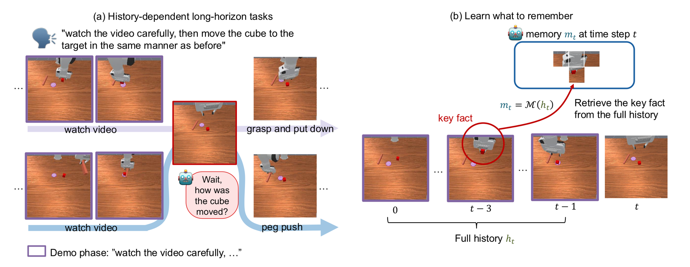

Vision–language–action (VLA) models struggle on history-dependent manipulation tasks, where the current observation alone does not determine the action, and the policy needs a memory of the history. Existing memory methods decide what to remember by design, for example keeping frames with large pixel changes, and show inconsistent gains across tasks. We view what to remember as an optimisation problem. From the POMDP formulation of imitation learning, we show that the optimal memory maximises the conditional mutual information I(at; mt | ot) between the action and the memory given the current observation, the information the decision needs but the observation lacks. We propose Divide-and-Remember (D&R), a recursive memory method that learns mt = 𝓜(ht) to maximise this objective, scaling to long contexts while staying compute-light. It involves two strategies: (1) the selection over the full history is divided recursively into subproblems of top-K selection over 2K tokens, so that fixed-size, lightweight selectors learned end-to-end support an unbounded history, and the composition comes with an approximation guarantee; (2) all recursion blocks share one selector, which captures the selection rule common to every block and keeps the method efficient. On RoboMME, a benchmark of 16 long-horizon manipulation tasks, D&R achieves a state-of-the-art average success rate with consistent gains across all four suites under a budget of only 64 tokens; real-robot experiments show the same gain.
Front and wrist camera of the RoboMME evaluation episodes (episodes 1–10 of every task, model seed 42). The same episode id is the same environment across methods; pick the episode and the two methods to compare. All methods share the π0.5 backbone; the memoryless π0.5 sees only the current observation.
@inproceedings{anonymous2027divide,
title = {Divide-and-Remember: Recursive Action-Relevant Memory for Long-Horizon VLA Policies},
author = {Anonymous},
booktitle = {Under review at the International Conference on Learning Representations (ICLR)},
year = {2027}
}